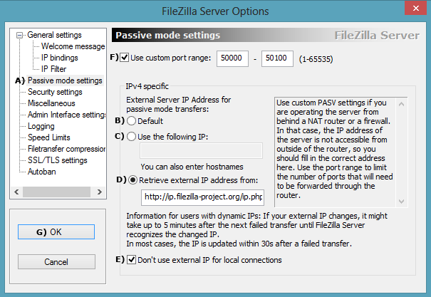
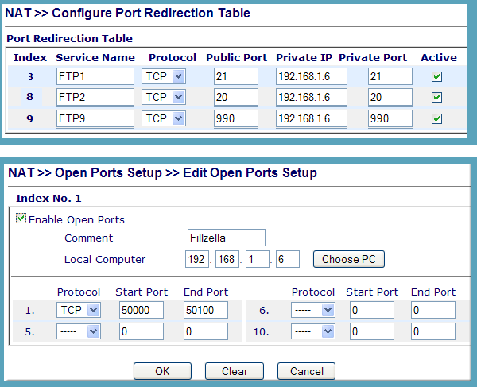

|
|
FileZilla SSL part 2 |
The previous page covered securing a local FTP server. This page expands on that for securing an FTP server to run over the Internet. Before proceeding, ensure you have configured and tested your FTP server as explained on the previous page. There are two transfer modes: active or passive. When an FTP server is configured for Internet use, the user (FTP client) is given priority. Everything is geared to make it easier for the client. Hence, your server must support passive mode. The following covers this mode and the added complication of running an FTP server behind a wireless router with NAT.
FTP Basics
FTP uses two ports, a command (control) port and data port. Traditionally, these are assigned ports 21 and 20 respectively. Depending on the operating mode, the data port is not always on port 20.
Passive FTP
Most browsers use passive mode for connection. This mode changes the data port as follows.
In passive mode, a client initiates both connections to the server. A client first opens two consecutive random unprivileged ports (ports above 1023). The first port contacts the server on port 21, and issues the PASV command. In response, the server opens a random unprivileged port and sends the PORT P command back to the client. The client then initiates the connection from its second port to transfer data.
A secure FTP server follows the above procedure with one minor difference; the command port used is reserved port 990.
What’s important when using a NAT device is the need to forward ports 20, 21, 990 and all unprivileged ports. In reality, unprivileged ports are restricted to a small range; for example, 50000 to 50100.
During a data transfer, the FTP server needs to send its visible IP address back to a client. Because of address translation through a NAT device, the FTP server has no way of determining this IP address. It needs to be set during FTP server configuration, which is not a problem if you have a fixed IP address. However, a dynamic IP is problematic. The FileZilla team neatly resolves this issue by providing a dynamic IP address resolution service.
Active FTP
If you have ever set up an FTP client behind a NAT (Network Address Translation) router, you will have been forced to change mode from active to passive. Reason for this, active FTP will not work behind a NAT device.
Summary
The above is intended to explain why you need to twiddle certain settings and how to choose options for your installation. All settings for passive mode are on a single page, making the whole set-up process easier.
Configure Passive Mode
- Start UniServer FileZilla Controller: Double-click on UniFzController.bat
- Start FileZilla Server: Click Start FZ Server
- Start FileZilla Interface: Click on Start Interface
- Select Edit > Settings
|
 |
Configure NAT Router
|
You need to forward ports 20, 21, 990 and the range (50000-50100) to your PC’s IP address (for example, 192.168.1.6). There is a vast range of routers. Hence, pay a visit to Port Forward for detailed instructions on how to forward ports on most routers. Hopefully, the example shown on the right will provide a clue what to look for when configuring your own router. |
 |
Summary
That concludes this two part secure FTP configuration guide. You now have a fully working secure FTP server that will transfer files locally or over the Internet.